CODING AGENTS AS PIXEL WORLD MODELS
traex/DeepSeek-V4.1-Flash · 0009
点击播放 · 原生 RGB 像素
逐轮保存的候选
回放视频、检查图与代码变化。
每份候选均可单独播放。实际图片检查记录在下方工具轨迹中。
候选 01播放与检查图
点击播放 · 原生 RGB 像素
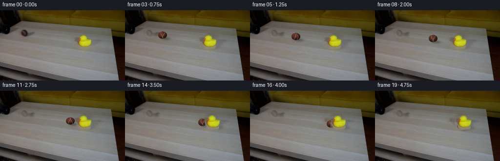
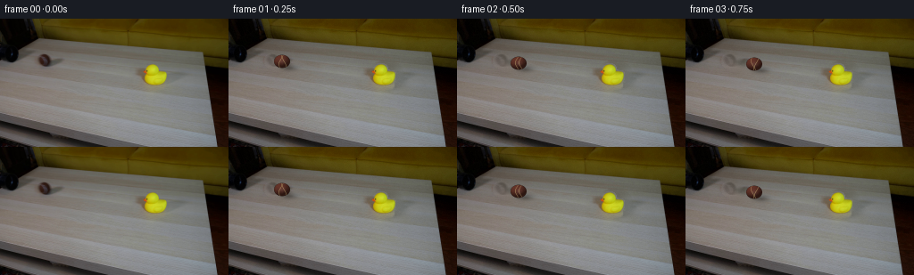
展开代码变化
--- 上一保存版本
+++ 本次保存版本
@@ -0,0 +1,231 @@
+from pathlib import Path
+
+import cv2
+import numpy as np
+from PIL import Image, ImageDraw, ImageFilter
+
+import artifact_io
+
+
+ROOT = Path(__file__).resolve().parent
+W, H = 256, 144
+N, FPS = 20, 4
+
+
+def smoothstep(edge0, edge1, x):
+ t = np.clip((x - edge0) / (edge1 - edge0), 0.0, 1.0)
+ return t * t * (3.0 - 2.0 * t)
+
+
+def ellipse_mask(shape, cx, cy, rx, ry, soft=1.0):
+ yy, xx = np.mgrid[: shape[0], : shape[1]]
+ d = np.sqrt(((xx - cx) / rx) ** 2 + ((yy - cy) / ry) ** 2)
+ return 1.0 - smoothstep(1.0 - soft / max(rx, ry), 1.0, d)
+
+
+def clean_plate(source):
+ """Remove the two movable objects while retaining the original set and texture."""
+ h, w = source.shape[:2]
+ yy, xx = np.mgrid[:h, :w]
+
+ ball_mask = ((((xx - 52.0) / 11.5) ** 2 + ((yy - 47.0) / 9.3) ** 2) <= 1.0)
+ ball_mask |= ((((xx - 61.0) / 11.5) ** 2 + ((yy - 54.0) / 5.2) ** 2) <= 1.0)
+
+ duck_mask = ((((xx - 176.0) / 20.0) ** 2 + ((yy - 63.0) / 16.0) ** 2) <= 1.0)
+ duck_mask |= ((((xx - 190.0) / 13.5) ** 2 + ((yy - 74.0) / 8.5) ** 2) <= 1.0)
+
+ mask = (ball_mask | duck_mask).astype(np.uint8) * 255
+ mask = cv2.dilate(mask, np.ones((3, 3), np.uint8), iterations=1)
+ plate = cv2.inpaint(cv2.cvtColor(source, cv2.COLOR_RGB2BGR), mask, 5, cv2.INPAINT_TELEA)
+ plate = cv2.cvtColor(plate, cv2.COLOR_BGR2RGB)
+
+ # Keep fine horizontal wood grain through the filled areas.
+ grain = source.astype(np.float32).mean(axis=2)
+ grain = grain - cv2.GaussianBlur(grain, (0, 0), 5.0)
+ fill = mask > 0
+ plate_float = plate.astype(np.float32)
+ plate_float[fill] += grain[fill, None] * 0.32
+ return np.clip(plate_float, 0, 255).astype(np.uint8)
+
+
+def extract_duck(source):
+ x0, y0, x1, y1 = 156, 48, 196, 80
+ crop = source[y0:y1, x0:x1].astype(np.float32)
+ r, g, b = crop[:, :, 0], crop[:, :, 1], crop[:, :, 2]
+ chroma = crop.max(axis=2) - crop.min(axis=2)
+ yellow_or_orange = ((r > 105) & (g > 52) & (chroma > 25)) | (
+ (r > 145) & (g > 62) & (b < 65)
+ )
+ eye_zone = np.zeros(chroma.shape, dtype=bool)
+ eye_zone[5:14, 14:23] = True
+ eye = eye_zone & (crop.mean(axis=2) < 64)
+
+ alpha = np.maximum(
+ smoothstep(8.0, 28.0, chroma) * (r > 90),
+ smoothstep(22.0, 54.0, crop.mean(axis=2)) * 0.0,
+ )
+ alpha = np.where(yellow_or_orange, np.maximum(alpha, 0.96), alpha)
+ alpha = np.where(eye, 1.0, alpha)
+
+ # A light, color-aware edge makes the original low-resolution silhouette clean.
+ alpha_img = Image.fromarray((alpha * 255).astype(np.uint8))
+ alpha_img = alpha_img.filter(ImageFilter.MaxFilter(3))
+ alpha = np.asarray(alpha_img).astype(np.float32) / 255.0
+ alpha[eye] = 1.0
+
+ rgba = np.dstack([crop, alpha * 255.0]).astype(np.uint8)
+ return rgba
+
+
+def render_ball(cx, cy, radius=9.0, phase=0.0):
+ """Anti-aliased brown tennis ball with a seam, grain and directional light."""
+ ss = 5
+ rx, ry = radius, radius * 0.82
+ width, height = int(2 * rx + 8), int(2 * ry + 8)
+ yy, xx = np.mgrid[0 : height * ss, 0 : width * ss].astype(np.float32)
+ xx = (xx + 0.5) / ss - width / 2
+ yy = (yy + 0.5) / ss - height / 2
+ nx = xx / rx
+ ny = yy / ry
+ rr = nx * nx + ny * ny
+ inside = rr <= 1.0
+ nz = np.sqrt(np.clip(1.0 - rr, 0.0, 1.0))
+
+ light = np.array([-0.42, -0.66, 0.62], dtype=np.float32)
+ light /= np.linalg.norm(light)
+ diffuse = np.clip(nx * light[0] + ny * light[1] + nz * light[2], 0.0, 1.0)
+ facing = np.clip(nz, 0.0, 1.0)
+ shade = 0.22 + 0.78 * diffuse
+
+ base = np.empty((height * ss, width * ss, 3), dtype=np.float32)
+ base[..., 0] = 82.0
+ base[..., 1] = 43.0
+ base[..., 2] = 34.0
+ base *= (0.38 + 0.84 * shade[..., None])
+
+ # Subtle fuzzy felt texture, deterministic from the rolling phase.
+ rng = np.random.default_rng(1907)
+ noise = rng.normal(0.0, 6.0, base.shape[:2]).astype(np.float32)
+ noise = cv2.GaussianBlur(noise, (0, 0), 1.2)
+ base += noise[..., None] * np.array([0.85, 0.55, 0.45], dtype=np.float32)
+
+ # Two pale seams wrap across the visible hemisphere.
+ v = ny
+ seam_a = np.abs(nx - (0.19 * np.sin(2.7 * v + 0.8 + phase) - 0.22))
+ seam_b = np.abs(nx - (-0.22 * np.sin(2.4 * v - 0.5 - phase) + 0.28))
+ seam = np.minimum(seam_a, seam_b)
+ seam_alpha = (1.0 - smoothstep(0.018, 0.048, seam)) * (nz > 0.10)
+ seam_alpha *= 0.45 + 0.30 * facing
+ seam_color = np.array([190.0, 167.0, 111.0], dtype=np.float32)
+ base = base * (1.0 - seam_alpha[..., None]) + seam_color * seam_alpha[..., None]
+
+ spec = np.power(np.clip(nz, 0.0, 1.0), 14.0) * 18.0
+ base += spec[..., None]
+ base = np.clip(base, 0.0, 255.0)
+ base[~inside] = 0.0
+
+ base = cv2.resize(base, (width, height), interpolation=cv2.INTER_AREA)
+ alpha = cv2.resize(inside.astype(np.float32), (width, height), interpolation=cv2.INTER_AREA)
+ rgba = np.dstack([base, alpha * 255.0]).astype(np.uint8)
+ return rgba
+
+
+def alpha_composite(canvas, sprite, left, top, angle=0.0):
+ rgba = Image.fromarray(sprite, "RGBA")
+ if abs(angle) > 1e-6:
+ rgba = rgba.rotate(
+ angle,
+ resample=Image.Resampling.BICUBIC,
+ expand=True,
+ center=(rgba.width / 2, rgba.height / 2),
+ )
+ left = int(round(left + (sprite.shape[1] - rgba.width) / 2))
+ top = int(round(top + (sprite.shape[0] - rgba.height) / 2))
+
+ x0, y0 = max(0, left), max(0, top)
+ x1 = min(canvas.shape[1], left + rgba.width)
+ y1 = min(canvas.shape[0], top + rgba.height)
+ if x0 >= x1 or y0 >= y1:
+ return canvas
+ arr = np.asarray(rgba)[y0 - top : y1 - top, x0 - left : x1 - left].astype(np.float32)
+ a = arr[..., 3:4] / 255.0
+ dst = canvas[y0:y1, x0:x1].astype(np.float32)
+ canvas[y0:y1, x0:x1] = np.clip(arr[..., :3] * a + dst * (1.0 - a), 0, 255).astype(np.uint8)
+ return canvas
+
+
+def add_soft_shadow(canvas, cx, cy, rx, ry, strength=0.30):
+ yy, xx = np.mgrid[:H, :W]
+ d = ((xx - cx) / rx) ** 2 + ((yy - cy) / ry) ** 2
+ amount = np.exp(-1.65 * d) * strength
+ amount = cv2.GaussianBlur(amount.astype(np.float32), (0, 0), 0.75)
+ arr = canvas.astype(np.float32)
+ arr *= (1.0 - amount[..., None])
+ canvas[:] = np.clip(arr, 0, 255).astype(np.uint8)
+
+
+def main():
+ source = np.asarray(Image.open(ROOT / "first_frame.png").convert("RGB"), dtype=np.uint8)
+ assert source.shape == (H, W, 3)
+ plate = clean_plate(source)
+ duck = extract_duck(source)
+
+ frames = []
+ contact_t = 3.0
+ start_x, start_y = 52.0, 47.0
+ contact_x, contact_y = 152.0, 63.5
+ speed_x = (contact_x - start_x) / contact_t
+ speed_y = (contact_y - start_y) / contact_t
+
+ for index in range(N):
+ if index == 0:
+ frames.append(source.copy())
+ continue
+
+ t = index / FPS
+ canvas = plate.copy()
+
+ if t <= contact_t:
+ bx = start_x + speed_x * t
+ by = start_y + speed_y * t
+ else:
+ dt = t - contact_t
+ bx = contact_x + 14.0 * dt
+ by = contact_y + 3.4 * dt + 0.7 * dt * dt
+
+ # Duck translates with a damped, spring-like response after impact.
+ dt = max(0.0, t - contact_t)
+ duck_dx = 10.5 * (1.0 - np.exp(-2.25 * dt))
+ duck_angle = -7.8 * np.exp(-1.55 * dt) * np.sin(4.2 * dt)
+
+ duck_left = 156 + duck_dx
+ duck_top = 48
+
+ # Both shadows are registered with their object and remain soft-edged.
+ add_soft_shadow(canvas, bx + 7.0, by + 6.4, 10.8, 4.2, 0.31)
+ add_soft_shadow(canvas, duck_left + 27.0, duck_top + 27.0, 12.5, 5.0, 0.22)
+
+ ball = render_ball(bx, by, radius=9.0, phase=bx * 0.15)
+ canvas = alpha_composite(canvas, ball, int(round(bx - ball.shape[1] / 2)), int(round(by - ball.shape[0] / 2)))
+ canvas = alpha_composite(
+ canvas,
+ duck,
+ int(round(duck_left)),
+ int(round(duck_top)),
+ angle=duck_angle,
+ )
+
+ # Fine sensor texture keeps the generated plate from looking like flat vector art.
+ rng = np.random.default_rng(800 + index)
+ noise = rng.normal(0.0, 0.75, (H, W, 1)).astype(np.float32)
+ canvas = np.clip(canvas.astype(np.float32) + noise, 0, 255).astype(np.uint8)
+ frames.append(canvas)
+
+ frames = np.stack(frames)
+ frames[0] = source
+ assert frames.shape == (20, 144, 256, 3) and frames.dtype == np.uint8
+ artifact_io.save(frames, ROOT)
+
+
+if __name__ == "__main__":
+ main()
候选 02播放与检查图
点击播放 · 原生 RGB 像素

展开代码变化
--- 上一保存版本
+++ 本次保存版本
@@ -173,7 +173,7 @@
frames = []
contact_t = 3.0
start_x, start_y = 52.0, 47.0
- contact_x, contact_y = 152.0, 63.5
+ contact_x, contact_y = 149.0, 63.5
speed_x = (contact_x - start_x) / contact_t
speed_y = (contact_y - start_y) / contact_t
@@ -185,18 +185,19 @@
t = index / FPS
canvas = plate.copy()
+ # Duck translates with a damped, spring-like response after impact.
+ dt = max(0.0, t - contact_t)
+ duck_dx = 9.0 * (1.0 - np.exp(-1.5 * dt))
+ duck_angle = -7.8 * np.exp(-1.55 * dt) * np.sin(4.2 * dt)
+
+ # The ball stays against the beak while transferring momentum, so it
+ # slows visibly as the lighter duck is pushed forward.
if t <= contact_t:
bx = start_x + speed_x * t
by = start_y + speed_y * t
else:
- dt = t - contact_t
- bx = contact_x + 14.0 * dt
- by = contact_y + 3.4 * dt + 0.7 * dt * dt
-
- # Duck translates with a damped, spring-like response after impact.
- dt = max(0.0, t - contact_t)
- duck_dx = 10.5 * (1.0 - np.exp(-2.25 * dt))
- duck_angle = -7.8 * np.exp(-1.55 * dt) * np.sin(4.2 * dt)
+ bx = contact_x + 0.72 * duck_dx
+ by = contact_y + 0.8 * dt
duck_left = 156 + duck_dx
duck_top = 48
候选 03播放与检查图
可观测工具轨迹
实际执行的命令与返回图片。
命令 1exit 0
/bin/bash -c "pwd && rg --files -g '"'!*.png'"' -g '"'!*.mp4'"' -g '"'!*.webm'"' | sort | sed -n '1,200p'"
命令 2exit 0
/bin/bash -c 'cat prompt.txt'
命令 3exit 0
/bin/bash -c 'cat GENERATION_RULES.md'
命令 4exit 0
/bin/bash -c "find . -maxdepth 3 -type f -printf '%p\\t%k KB\\n' | sort | sed -n '1,240p'"
命令 5exit 0
/bin/bash -c "sed -n '1,240p' artifact_io.py"
命令 6exit 0
/bin/bash -c "python - <<'PY'
from PIL import Image
im=Image.open('first_frame.png')
print(im.size, im.mode)
im.resize((1024,576), Image.Resampling.NEAREST).save('.tmp/first_nearest.png')
im.resize((1024,576), Image.Resampling.LANCZOS).save('.tmp/first_lanczos.png')
PY"命令 7exit 0
/bin/bash -c "python - <<'PY'
from PIL import Image
im=Image.open('first_frame.png')
for name,box in [('ball',(35,36,73,67)),('duck',(150,36,201,87)),('pipe',(0,0,55,80)),('table',(0,20,256,120))]:
im.crop(box).resize(((box[2]-box[0])*8,(box[3]-box[1])*8),Image.Resampling.NEAREST).save('.tmp/'+name+'_8x.png')
PY"命令 8exit 0
/bin/bash -c "python - <<'PY'
try:
import cv2; print('cv2',cv2.__version__)
except Exception as e: print('no cv2',e)
try:
import scipy; print('scipy',scipy.__version__)
except Exception as e: print('no scipy',e)
PY"命令 9exit 0
/bin/bash -c "python - <<'PY'
from PIL import Image
im=Image.open('first_frame.png')
for xy in [(0,0),(5,20),(10,30),(15,40),(20,50),(25,55),(50,48),(52,46),(175,53),(170,40),(120,40),(100,50),(20,100)]: print(xy,im.getpixel(xy))
PY"命令 10exit 0
/bin/bash -c "python - <<'PY'
from PIL import Image
im=Image.open('first_frame.png')
im.crop((0,0,256,144)).resize((1536,864),Image.Resampling.LANCZOS).save('.tmp/first_6x.png')
PY"命令 11exit 0
/bin/bash -c "python - <<'PY'
from PIL import Image
import numpy as np
im=np.array(Image.open('first_frame.png'))
# list approximate color runs across rows
for y in [0,10,20,30,40,50,60,70,80,90,100,110,120,130,140]:
arr=im[y]
# intervals quantized color
q=(arr//16)*16
runs=[]; s=0; c=tuple(q[0])
for x in range(1,256):
nc=tuple(q[x])
if nc"'!=c:
if x-s>=3:runs.append((s,x-1,c))
s=x;c=nc
if 256-s>=3:runs.append((s,255,c))
print('"'y',y,runs)
PY"命令 12exit 0
/bin/bash -c "python - <<'PY'
from PIL import Image
import numpy as np
im=np.array(Image.open('first_frame.png'))
for y in range(42,84):
row=''
for x in range(155,198):
r,g,b=im[y,x]
if r>100 and g>110 and b<120 and g>b*1.35: c='Y'
elif r>100 and g<110 and b<80: c='O'
elif r<70 and g<70 and b<70: c='#'
elif r>90 and g>90 and b>80: c='.'
else:c=' '
row+=c
print(f'{y:3d} {row}')
PY"命令 13exit 0
/bin/bash -c "python - <<'PY'
from PIL import Image
import numpy as np
im=np.array(Image.open('first_frame.png')).astype(float)
# table region detect edges / gradients y boundary
for x in [0,20,40,60,80,100,120,140,160,180,200,220,240,255]:
print(x, [(y,tuple(im[y,x].astype(int))) for y in [25,28,30,31,32,33,34,35,36,37,38,39,40]])
PY"命令 14exit 0
/bin/bash -c "python - <<'PY'
from PIL import Image
import numpy as np
im=np.array(Image.open('first_frame.png')).astype(int)
for y in range(44,68):
row=''
for x in range(40,76):
r,g,b=im[y,x]
if r>100 and r>g*1.45 and g>b*1.1: c='B'
elif r>70 and r>g*1.25: c='b'
elif r<30 and g<30 and b<30: c='#'
elif r>85 and g>85 and b>80: c='.'
else:c=' '
row+=c
print(f'{y:3d} {row}')
PY"命令 15exit 0
/bin/bash -c "python - <<'PY'
from PIL import Image
import numpy as np
im=np.array(Image.open('first_frame.png')).astype(int)
for y in range(44,68):
row=''
for x in range(40,76):
r,g,b=im[y,x]
# based colors print value as char from red
if r<40: c='#'
elif r<70: c='x'
elif r<100: c='+'
elif r<130: c='.'
else: c='B'
row+=c
print(f'{y:3d} {row}')
PY"命令 16exit 0
/bin/bash -c "python - <<'PY'
from PIL import Image
import numpy as np
im=np.array(Image.open('first_frame.png')).astype(int)
for y in range(42,55):
for x in range(40,76):
r,g,b=im[y,x]
if r>g+15 and r>b+10: print(y,x,(r,g,b),end='; ')
print()
PY"命令 17exit 0
/bin/bash -c "python - <<'PY'
from PIL import Image
import numpy as np
im=np.array(Image.open('first_frame.png')).astype(int)
# print 44:56 ball colors via ANSI-ish chars using luminance and saturation
for y in range(40,56):
row=''
for x in range(38,78):
r,g,b=im[y,x]; sat=max(r,g,b)-min(r,g,b); lum=(r+g+b)/3
if r>g*1.4 and r>b*1.4 and r>70: c='R'
elif r>g*1.2 and r>b*1.2 and r>40: c='r'
elif lum<35: c='#'
elif lum<55: c='x'
elif lum<75: c='+'
elif lum<95: c='.'
else: c=' '
row+=c
print(f'{y:3d} {row}')
PY"命令 18exit 0
/bin/bash -c "python - <<'PY'
from PIL import Image
import numpy as np
im=np.array(Image.open('first_frame.png')).astype(int)
# find pipe boundaries by low lum and dark chromatic
for y in range(0,45):
xs=[]
for x in range(0,60):
r,g,b=im[y,x]
if max(r,g,b)<55 and x<40: xs.append(x)
if xs: print(y,min(xs),max(xs),len(xs))
PY"命令 19exit 0
/bin/bash -c "python - <<'PY'
from PIL import Image
import numpy as np
im=np.array(Image.open('first_frame.png')).astype(int)
for y in range(0,44,2):
row=''
for x in range(0,60):
r,g,b=im[y,x]; l=(r+g+b)/3
if l<8:c='@'
elif l<16:c='#'
elif l<28:c='X'
elif l<45:c='x'
elif l<65:c='+'
elif l<85:c='.'
else:c=' '
row+=c
print(f'{y:2d} {row}')
PY"命令 20exit 1
/bin/bash -c "python - <<'PY'
from PIL import Image
import numpy as np
im=np.array(Image.open('first_frame.png')).astype(int)
# Search horizontal rows with strongest edges in table
for y in range(105,145):
d=np.mean(np.abs(np.diff(im[y].mean(1))))
if d>5: print(y,round(d,1))
PY"命令 21exit 0
/bin/bash -c "sed -n '1,220p' player_template.html"
命令 22exit 0
/bin/bash -c "python - <<'PY'
from PIL import Image
import numpy as np
im=np.array(Image.open('first_frame.png')).astype(int)
for y in range(100,144):
d=np.mean(np.abs(np.diff(im[y].mean(1))))
if d>5: print(y,round(d,1))
PY"命令 23exit 0
/bin/bash -c "python - <<'PY'
from PIL import Image
import numpy as np
im=np.array(Image.open('first_frame.png')).astype(int)
# print per row median and mean and selected percentiles
for y in range(20,144,5):
l=im[y].mean(1)
print(y, np.percentile(l,[10,25,50,75,90]).round().astype(int).tolist())
PY"命令 24exit 0
/bin/bash -c 'python generate.py'
命令 25exit 0
/bin/bash -c "python - <<'PY'
from PIL import Image
import numpy as np
for i in [0,1,2,6,12,13,14,15,19]:
im=Image.open(f'frames/{i:02d}.png')
im.resize((768,432),Image.Resampling.NEAREST).save(f'.tmp/f{i:02d}.png')
# Compare frame 0
a=np.array(Image.open('first_frame.png'));b=np.array(Image.open('frames/00.png'))
print('identical',np.array_equal(a,b),'maxdiff',np.abs(a.astype(int)-b.astype(int)).max())
PY"命令 26exit 0
/bin/bash -c "python - <<'PY'
import numpy as np
from PIL import Image
import generate
src=np.array(Image.open('first_frame.png').convert('RGB'))
d=generate.extract_duck(src)
print(d.shape, d[...,3].min(),d[...,3].max(),np.sum(d[...,3]>0),np.sum(d[...,3]>128))
Image.fromarray(d).resize((320,256),Image.Resampling.NEAREST).save('.tmp/duck_alpha.png')
p=generate.clean_plate(src)
Image.fromarray(p).save('.tmp/plate.png')
PY"命令 27exit 0
/bin/bash -c "python - <<'PY'
from PIL import Image
import numpy as np
for idx in [12,13,14,15,19]:
im=np.array(Image.open(f'frames/{idx:02d}.png'))
Image.fromarray(im[35:105,125:225]).resize((800,560),Image.Resampling.NEAREST).save(f'.tmp/crop{idx}.png')
PY"命令 28exit 0
/bin/bash -c "python - <<'PY'
from PIL import Image
import numpy as np
im=np.array(Image.open('first_frame.png')).astype(int)
# bounding box of ball using chroma > 20, red dominant
r,g,b=im.transpose(2,0,1)
m=(r>g+12)&(r>b+12)&(r>38)
y,x=np.where(m)
print(x.min(),x.max(),y.min(),y.max(),len(x))
# duck similarly
m2=(r>105)&(g>75)&(b<100)&(g>b*1.2)
y,x=np.where(m2)
print(x.min(),x.max(),y.min(),y.max(),len(x))
PY"命令 29exit 0
/bin/bash -c "python - <<'PY'
from PIL import Image
import numpy as np
im=np.array(Image.open('first_frame.png')).astype(int)
r,g,b=im.transpose(2,0,1)
m=(r>g+12)&(r>b+12)&(r>38)
m[:35]=False;m[:, :35]=False;m[:,80:]=False
y,x=np.where(m)
print(x.min(),x.max(),y.min(),y.max(),len(x))
PY"命令 30exit 0
/bin/bash -c "python - <<'PY'
from PIL import Image
import numpy as np
im=np.array(Image.open('first_frame.png')).astype(int)
r,g,b=im.transpose(2,0,1)
m=(r>g+12)&(r>b+12)&(r>38)
m[:35]=False;m[:, :35]=False;m[:,80:]=False;m[65:]=False
y,x=np.where(m)
print(x.min(),x.max(),y.min(),y.max(),len(x))
PY"命令 31exit 0
/bin/bash -c "python - <<'PY'
import numpy as np
from PIL import Image
im=np.array(Image.open('first_frame.png')).astype(int)
for y in range(38,54):
row=''
for x in range(36,70):
r,g,b=im[y,x]
if r>g+25 and r>b+18 and r>60: c='R'
elif r>g+8 and r>b+8 and r>35:c='r'
elif (r+g+b)/3<30:c='#'
elif (r+g+b)/3<55:c='x'
elif (r+g+b)/3<80:c='.'
else:c=' '
row+=c
print(f'{y:2d} {row}')
PY"命令 32exit 0
/bin/bash -c "python - <<'PY'
from PIL import Image
import numpy as np
im=np.array(Image.open('first_frame.png')).astype(int)
for y in range(35,57):
row=''
for x in range(30,75):
r,g,b=im[y,x]; l=(r+g+b)/3
if r>g+25 and r>b+18 and r>60:c='R'
elif r>g+8 and r>b+8 and r>35:c='r'
elif l<30:c='#'
elif l<55:c='x'
elif l<80:c='.'
else:c=' '
row+=c
print(f'{y:2d} {row}')
PY"命令 33exit 0
/bin/bash -c "python - <<'PY'
import numpy as np
from PIL import Image
im=np.array(Image.open('first_frame.png')).astype(int)
for y in range(39,54):
vals=[]
for x in range(38,66):
r,g,b=im[y,x]
if r>g+18 and r>b+12 and r>45: vals.append(x)
if vals: print(y,min(vals),max(vals),len(vals))
PY"命令 34exit 0
/bin/bash -c "python - <<'PY'
import numpy as np
from PIL import Image
im=np.array(Image.open('first_frame.png')).astype(int)
# exact RGB grid ball
for y in range(39,55):
print(y, [(x,tuple(im[y,x])) for x in range(41,61)])
PY"命令 35exit 0
/bin/bash -c "python - <<'PY'
import numpy as np
from PIL import Image
im=np.array(Image.open('first_frame.png')).astype(int)
for y in range(39,54):
pts=[]
for x in range(39,65):
r,g,b=im[y,x]
if r>g+10 and r>b+10 and r>35: pts.append(x)
if pts:print(y,min(pts),max(pts),len(pts))
PY"命令 36exit 0
/bin/bash -c "python - <<'PY'
from PIL import Image
im=Image.open('.tmp/ball_8x.png')
im.crop((0,0,304,240)).save('.tmp/ball_focus.png')
PY"命令 37exit 0
/bin/bash -c "python - <<'PY'
from PIL import Image
import numpy as np
for idx in [6,12,13,14]:
im=Image.open(f'frames/{idx:02d}.png')
im.crop((40 if idx==6 else 130,45 if idx==6 else 45,75 if idx==6 else 200,75)).resize(((35 if idx==6 else 70)*8,30*8),Image.Resampling.NEAREST).save(f'.tmp/ball{idx}.png')
PY"命令 38exit 0
/bin/bash -c "python - <<'PY'
import generate
import numpy as np
from PIL import Image
b=generate.render_ball(52,47,radius=9,phase=2)
Image.fromarray(b).resize((b.shape[1]*12,b.shape[0]*12),Image.Resampling.NEAREST).save('.tmp/rendball.png')
print(b.shape,b[...,3].max())
PY"命令 39exit 0
/bin/bash -c 'python generate.py'
命令 40exit 0
/bin/bash -c "python - <<'PY'
from PIL import Image
import numpy as np
for idx in [12,13,14,15,16,17,18,19]:
im=Image.open(f'frames/{idx:02d}.png')
im.crop((130,45,210,92)).resize((800,470),Image.Resampling.NEAREST).save(f'.tmp/c2_{idx}.png')
PY"命令 41exit 0
/bin/bash -c "python - <<'PY'
from PIL import Image
import numpy as np
im=np.array(Image.open('first_frame.png'))
# Save exact ball and duck crops with upscale for comparison
Image.fromarray(im[35:58,35:70]).resize((700,460),Image.Resampling.NEAREST).save('.tmp/orig_ball.png')
PY"命令 42exit 0
/bin/bash -c "python - <<'PY'
from PIL import Image
import numpy as np
im=np.array(Image.open('first_frame.png'))
# connected components of dark+colored candidate in ball ROI to inspect shape precisely
roi=im[35:58,35:70]
for y in range(roi.shape[0]):
row=''
for x in range(roi.shape[1]):
r,g,b=map(int,roi[y,x]); l=(r+g+b)/3
if l<75 and r>g+5: c='@'
elif l<88:c='o'
elif l<98:c='.'
else:c=' '
row+=c
print(f'{y+35:2d} {row}')
PY"命令 43exit 0
/bin/bash -c "python - <<'PY'
import numpy as np
from PIL import Image
p=np.load('pixels.npz')['pixels']
print('pixels',p.shape,p.dtype,'range',p.min(),p.max())
a=np.array(Image.open('first_frame.png'));b=np.array(Image.open('frames/00.png'))
print('frame0 identical',np.array_equal(a,b))
print('frames',len(__import__('glob').glob('frames/*.png')))
PY"命令 44exit 127
/bin/bash -c 'ffmpeg -hide_banner -loglevel error -y -framerate 4 -i frames/%02d.png -c:v libx264 -preset slow -crf 16 -pix_fmt yuv420p -movflags +faststart video.mp4 && ffprobe -v error -select_streams v:0 -show_entries stream=width,height,r_frame_rate,nb_frames,pix_fmt -of default=nw=1 video.mp4'
命令 45exit 0
/bin/bash -c "python - <<'PY' mods=['imageio','imageio_ffmpeg','av','moviepy'] for m in mods: try: x=__import__(m); print(m,'ok',getattr(x,'__version__','')) except Exception as e: print(m,'no',type(e).__name__) PY"
命令 46exit 0
/bin/bash -c "python - <<'PY'
import av
from pathlib import Path
frames=[av.VideoFrame.from_image(__import__('PIL.Image').Image.open(p)) for p in sorted(Path('frames').glob('*.png'))]
with av.open('video.mp4','w') as c:
s=c.add_stream('libx264',rate=4)
s.width=256;s.height=144;s.pix_fmt='yuv420p'
s.options={'crf':'16','preset':'slow','movflags':'+faststart'}
for f in frames:
for p in s.encode(f): c.mux(p)
for p in s.encode(): c.mux(p)
print('encoded')
PY
python - <<'PY'
import av
c=av.open('video.mp4');s=c.streams.video[0]
print(s.width,s.height,s.average_rate,s.frames,s.pix_fmt,len(list(c.decode(video=0))))
PY"命令 47exit 0
/bin/bash -c "python - <<'PY'
import av
from PIL import Image
import numpy as np
c=av.open('video.mp4')
for i,f in enumerate(c.decode(video=0)):
if i in (0,6,12,14,19):
f.to_image().save(f'.tmp/v{i}.png')
print('done')
PY"命令 48exit 0
/bin/bash -c "python - <<'PY'
import numpy as np
from PIL import Image
# inspect alpha edge of duck and its composite at frame 19
for idx in [13,14,19]:
a=np.array(Image.open(f'frames/{idx:02d}.png'))
# crop exact and print local image colors using simple ASCII luminance
print('FRAME',idx)
for y in range(48,82):
row=''
for x in range(150,215):
r,g,b=a[y,x]; l=(r+g+b)/3
if r>100 and g>90 and b<100:c='Y'
elif r>g+18 and r>b+18 and r>45:c='b'
elif l<50:c='#'
elif l<75:c='+'
elif l<105:c='.'
else:c=' '
row+=c
print(row)
PY"命令 49exit 0
/bin/bash -c 'ls -lh video.mp4 pixels.npz index.html inspection.png generate.py && git status --short 2>/dev/null || true'
命令 50exit 0
/bin/bash -c "python -m py_compile generate.py && python - <<'PY'
from pathlib import Path
import numpy as np, av
from PIL import Image
frames=sorted(Path('frames').glob('*.png'))
assert len(frames)==20
for p in frames:
im=Image.open(p)
assert im.size==(256,144) and im.mode=='RGB'
assert np.array_equal(np.array(Image.open('first_frame.png')),np.array(Image.open(frames[0])))
c=av.open('video.mp4'); s=c.streams.video[0]
assert (s.width,s.height,int(s.average_rate),len(list(c.decode(video=0))))==(256,144,4,20)
print('PASS: 20 frames, 256x144, 4 fps, exact frame 0, MP4 decodes')
PY"视觉工具实际返回图片 1

视觉工具实际返回图片 2
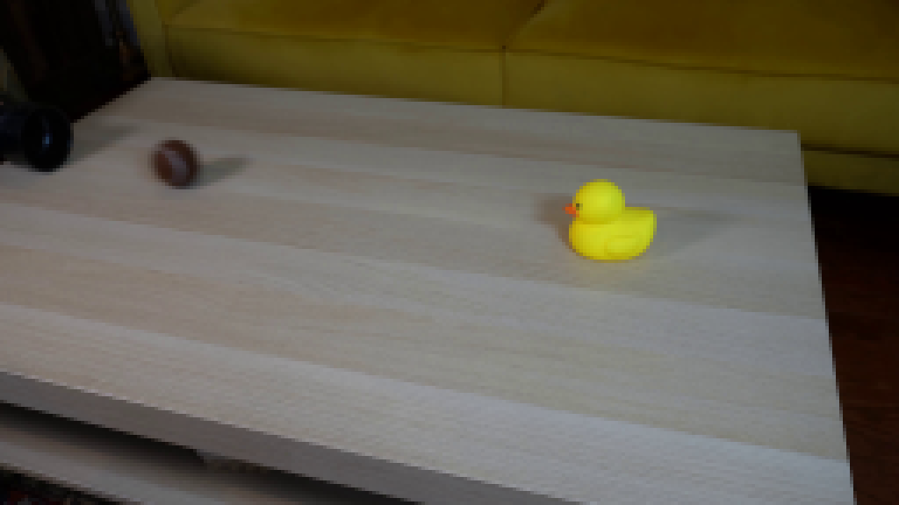
视觉工具实际返回图片 3
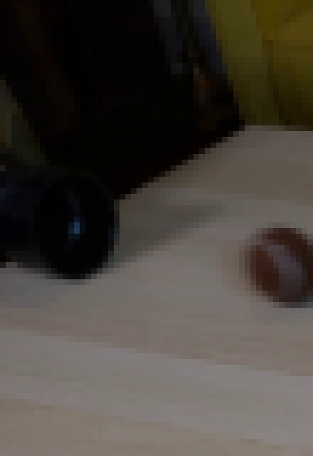
视觉工具实际返回图片 4
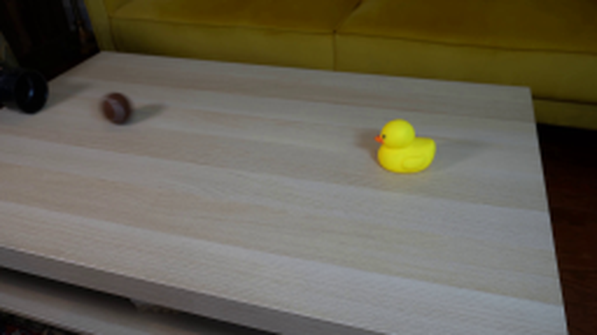
视觉工具实际返回图片 5
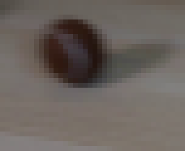
视觉工具实际返回图片 6
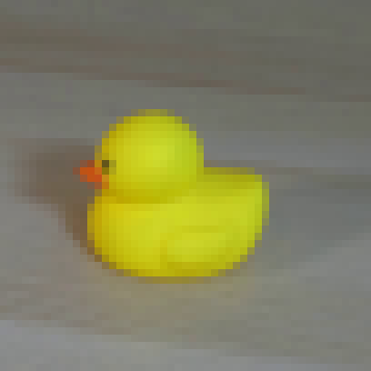
视觉工具实际返回图片 7

视觉工具实际返回图片 8
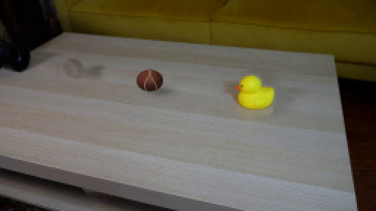
视觉工具实际返回图片 9
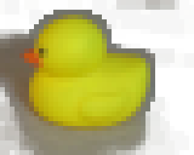
视觉工具实际返回图片 10
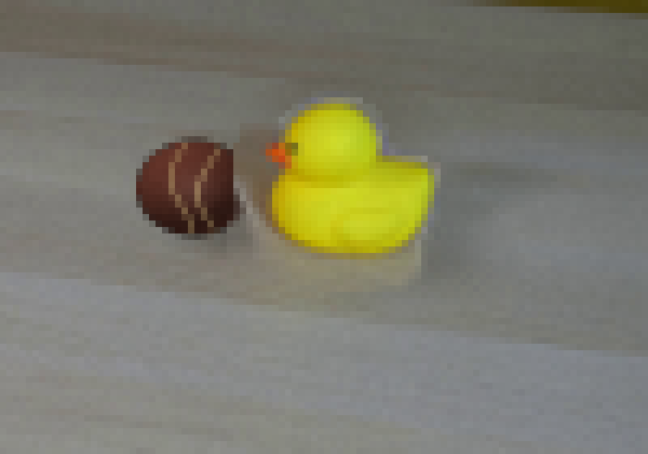
视觉工具实际返回图片 11
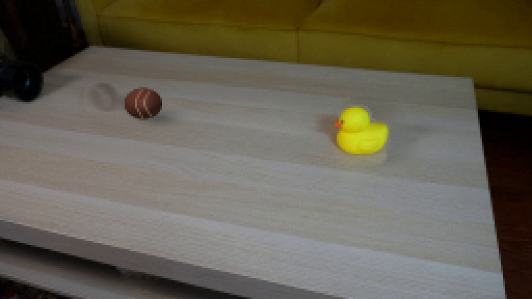
视觉工具实际返回图片 12
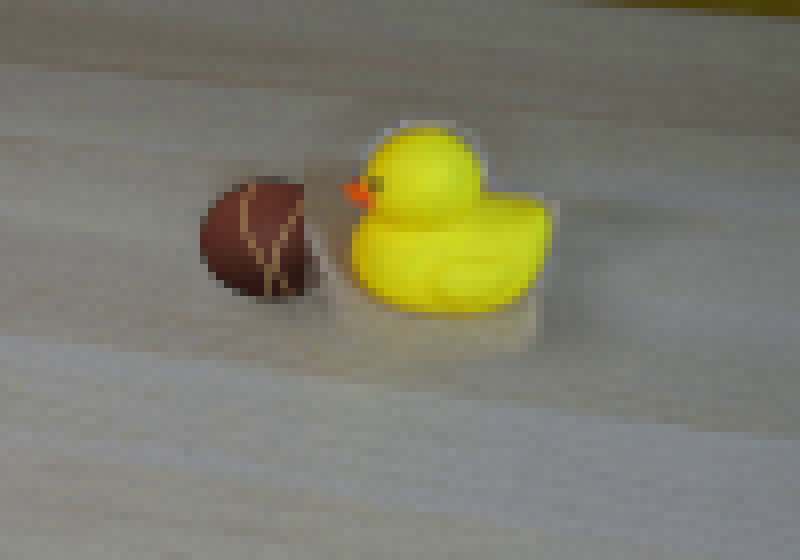
视觉工具实际返回图片 13
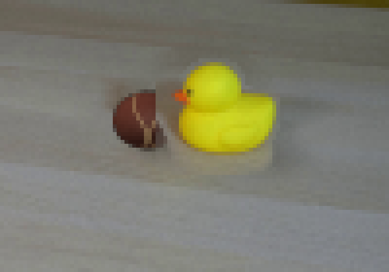
视觉工具实际返回图片 14
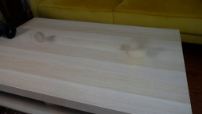
视觉工具实际返回图片 15
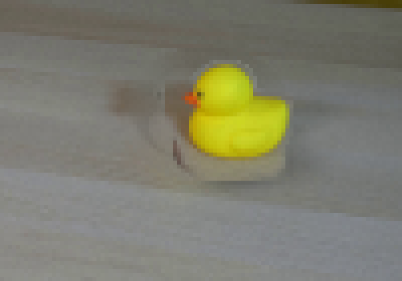
视觉工具实际返回图片 16
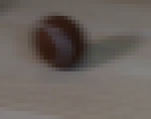
视觉工具实际返回图片 17
视觉工具实际返回图片 18
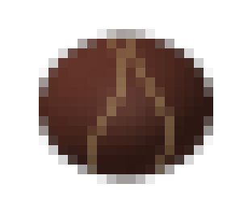
视觉工具实际返回图片 19

视觉工具实际返回图片 20
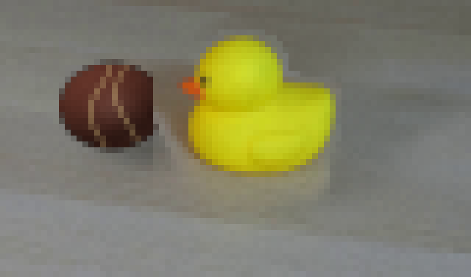
视觉工具实际返回图片 21
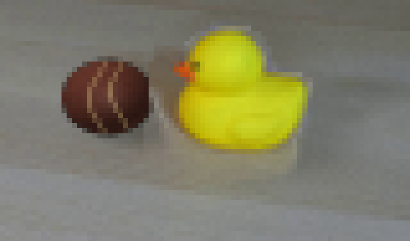
视觉工具实际返回图片 22
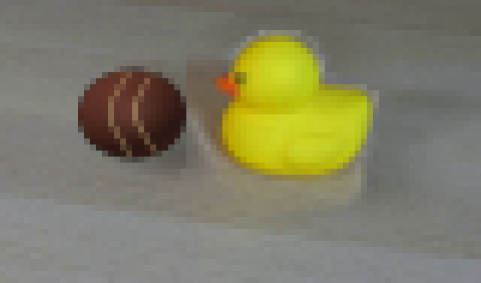
视觉工具实际返回图片 23
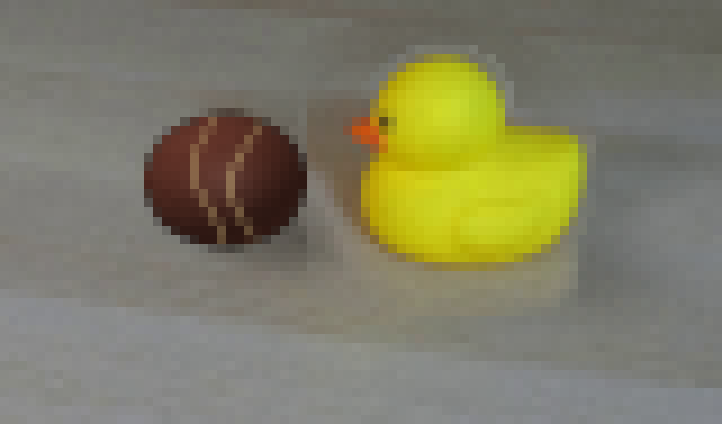
视觉工具实际返回图片 24
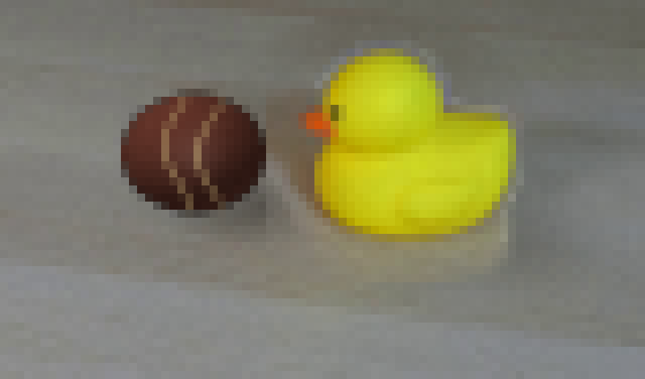
视觉工具实际返回图片 25
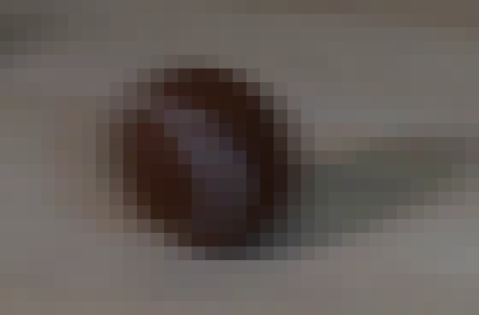
视觉工具实际返回图片 26
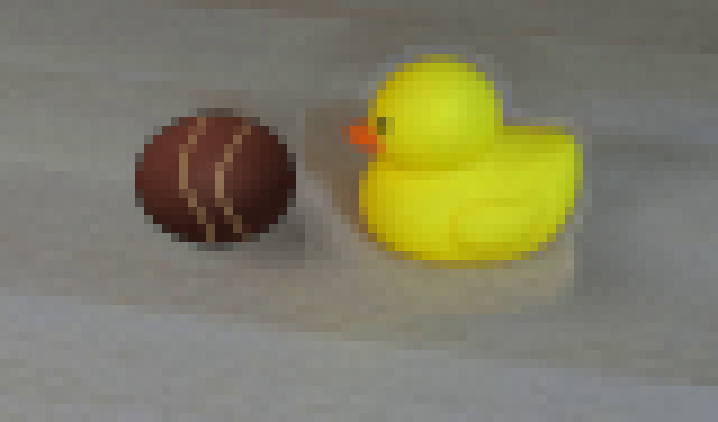
视觉工具实际返回图片 27
视觉工具实际返回图片 28
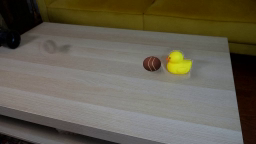
保存候选 3 份；完成命令 50 次；可验证图片返回 28 张。原始 API 响应与完整日志保留在本地。